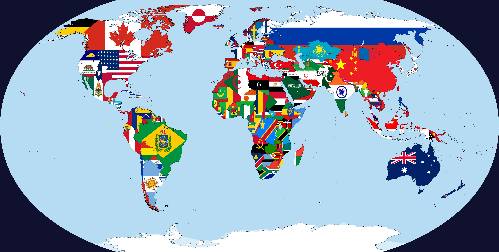

El Mapa Geopolítico en 2025

En esta realidad, América del Norte se mantiene dividida entre potencias económicas independientes, mientras que la Commonwealth lidera el orden global.
Las Naciones del Nuevo Mundo
California
La 4ª economía mundial. Centro global de tecnología y cine, con un PIB superior a 4.1 billones de dólares y relaciones estratégicas con Asia y México.
Texas
Una potencia energética soberana. Texas es la 9ª economía del mundo, destacando en petróleo, agricultura y una industria aeroespacial independiente.
Alaska
El hogar de la Dinastía Románov. La única nación ortodoxa de América, rica en petróleo y sucesora oficial del Imperio Ruso en el exilio.
La Commonwealth Británica
Tras el colapso soviético en 1991, el Reino Unido y su red de aliados (incluyendo a Oregón) emergieron como la principal superpotencia, solo desafiada recientemente por el ascenso de China.
Centro Financiero Mundial
Miembro Próspero
Reino Independiente (1966)
Vistas Modernas (2025)
San Francisco, República de California
Austin, República de Texas
Londres, Capital Global
Reino de Hawái, Independiente